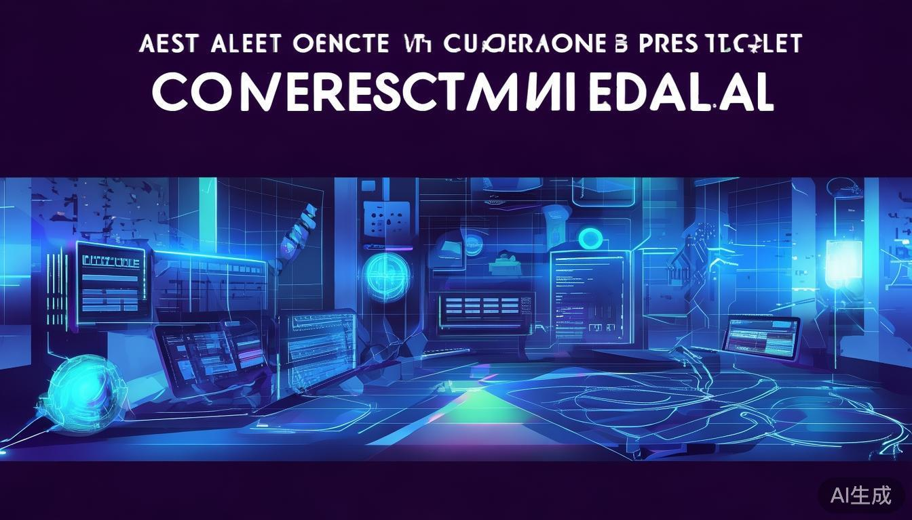

最新开源对话式 AI 项目全景 · 一键使用指南
这份清单基于 2026 年 8 月的 GitHub 与公开资料整理。目标就一个：把当前最火的开源对话式 AI 项目全部罗列出来，讲清它们的共同特点，然后每一个都教你一键跑起来——不限量、免费、数据不出本机。
一、它们有什么共同特点（先看懂规律）
翻遍 2026 年 GitHub Trending 上的开源 AI 项目，你会发现一个清晰的共识。几乎所有热门项目都具备下面这些共同点：
- 开源权重（open weights） —— 模型本身可下载，MIT / Apache 2.0 这类宽松协议居多，可以自由商用、私有化部署。
- OpenAI 兼容接口 —— 几乎所有项目都提供
OpenAI 兼容 API，这意味着你原来的代码一行不改，换个地址就能切到本地开源模型。 - 本地优先（local-first） —— 数据不出本机，隐私合规。这是 2026 年最强烈的一股趋势：开发者用 star 投票，票都投给了「能自己跑」的东西。
- 一键 / 一行命令部署 —— 从 Ollama 的一行命令，到 OpenClaw 的一条安装脚本，门槛被压到「普通人十分钟上手」。
- 模型无关（model-agnostic） —— 工具和模型解耦，一个界面可以接 DeepSeek、Qwen、Llama、GLM 任意模型，自由切换。
- 低成本甚至免费 —— 网页/本地免费，API 按量付费且价格极低（DeepSeek 把成本打到了西方同行的零头）。
一句话总结这个时代的规律：价值不在「谁的模型更强」，而在「能不能自己跑、能不能拼起来、能不能白嫖别人的工程力」。
二、对话式大模型（模型本身）

| 模型 | 出品方 | 规模 | 协议 | 特点 | 一键命令（Ollama） |
|---|---|---|---|---|---|
| DeepSeek V4 | 深度求索 | V4-Pro / V4-Flash | MIT | 性价比之王、1M 上下文、四种模式 | ollama run deepseek-v4 |
| GLM-5 | 智谱 Z.AI | 744B MoE / 40B 激活 | MIT | 当前最大开源权重、推理顶级 | ollama pull glm5 |
| Qwen3.6 | 阿里 | 35B-A3B 等全系 | Apache 2.0 | 中文强、能塞进笔记本 | ollama run qwen3.6 |
| Kimi K3 | 月之暗面 | 2.78T（思考型） | 开放权重 | 超强多步推理、262K 上下文 | ollama run kimi-k3 |
| Mistral Large 3 | Mistral | 675B MoE | Mistral | 欧洲语言、高级推理 | ollama pull mistral-large |
| Llama 4 | Meta | 全系 | 开放权重 | 开源生态底座、微调最多 | ollama run llama4 |
| MiniMax M3 | MiniMax | MoE | 开放权重 | 中文、多模态 | 官方渠道 |
| MiMo-V2.5-Pro | 小米 | MoE | 开放权重 | 中文、性价比 | 官方渠道 |
| DeepSeek Coder V2 | 深度求索 | 16B / 236B | MIT | 代码生成专用 | ollama run deepseek-coder-v2 |
| Qwen3-Coder | 阿里 | 480B MoE | Apache 2.0 | Agent 编程、SWE-bench 66.5% | ollama pull qwen3-coder |
选型速记：中文日常用 DeepSeek/Qwen；推理/数学用 GLM-5/Kimi K3；写代码用 DeepSeek Coder/Qwen3-Coder；本地小机器用 Qwen3.6 或 Llama 小尺寸。
三、一键运行工具（跑模型 + 对话界面）
3.1 Ollama —— 一行命令跑模型（16.5 万星）
「本地 AI 的 Docker」，把跑开源模型做到一行命令。
# 安装（macOS / Linux）
curl -fsSL https://ollama.ai/install.sh | sh
# Windows 直接下载安装包
# 一键跑模型
ollama run deepseek-v4
ollama run qwen3.6
ollama run llama4
# 自带 OpenAI 兼容 API（默认 11434 端口）
curl http://localhost:11434/v1/chat/completions \
-H "Content-Type: application/json" \
-d '{"model":"qwen3.6","messages":[{"role":"user","content":"你好"}]}'
适用：所有人，入门首选。
3.2 LM Studio —— 桌面 GUI 一键跑
下载即用的桌面客户端，图形界面选模型、下载、聊天，自带本地 API 服务器。适合不想碰命令行的用户。
一键使用：官网下载安装包 打开 搜索模型 下载 点「Chat」开聊。
3.3 GPT4All —— 零配置桌面客户端（7 万星）
主打「隐私至上 + 零配置」，内置 1000+ 预量化模型浏览器，一键下载即用，还支持把 PDF/文档拖进去建立本地知识库（LocalDocs，完全离线 RAG）。
一键使用：下载安装 打开 选模型 下载 聊天 / 拖文档问答。
3.4 Jan —— 桌面客户端的「颜值天花板」（2.5 万星）
设计精美，macOS/Windows/Linux 三端一致，内置模型目录 + 一键下载 + 智能 GPU 检测，还能一键开启 OpenAI 兼容 API 对接编程工具。
一键使用：下载安装 选模型 下载 聊天；设置里打开「本地 API」即可对接 Cursor/Aider。
3.5 Open WebUI —— 自托管 ChatGPT 界面（14.8 万星）
功能最全的自托管聊天界面，接 Ollama + OpenAI API，带 RAG、多用户、语音、插件。
# 一键（pip 方式）
pip install open-webui
open-webui serve
# 或 Docker
docker run -d -p 3000:8080 --name open-webui --restart always ghcr.io/open-webui/open-webui:main
适用：想搭一个「私有版 ChatGPT」的个人或团队。
3.6 OpenClaw —— 本地优先个人 AI 助理（38 万星，史上涨星最快）
2026 年的现象级项目：一个跑在你自己设备上的个人 AI 助理，通过你已在用的聊天渠道（微信/飞书/WhatsApp/Telegram/Slack 等 20+ 平台）回复你。模型无关，既能接闭源模型，也能通过 Ollama 完全本地化。
# 一键安装
curl -fsSL https://openclaw.ai/install.sh | bash
# Windows（PowerShell）
iwr -useb https://openclaw.ai/install.ps1 | iex
# 初始化向导
openclaw onboard --install-daemon
# 查看状态 / 打开控制台
openclaw gateway status
openclaw dashboard
适用：想要「24 小时不休息、月成本几十块数字员工」的超级个体。
安全红线：不要把它暴露到公网；用 Tailscale 等零信任组网做远程访问；默认保持鉴权关闭状态。
3.7 llama.cpp —— 最成熟的本地推理引擎
纯 C/C++ 推理，CPU 都能跑，是 GGUF 量化格式的「老家」。
# macOS
brew install llama.cpp
# Windows
winget install llama.cpp # 或 GitHub Release 下载预编译包
# 运行
./main -m models/7b.gguf -p "你好"
# 启动 OpenAI 兼容服务
llama-server -m models/7b.gguf --port 8080
3.8 vLLM —— 生产级推理「工业标准」（4 万星）
吞吐量王者（PagedAttention），搭「私有版 OpenAI API」最靠谱的选择。
pip install vllm
vllm serve Qwen/Qwen2.5-7B-Instruct --port 8000
3.9 AirLLM —— 4GB 显存跑 70B（3 万星）
分层加载技术，让消费级小显卡也能推理超大模型（速度慢，但「能跑」）。
pip install airllm
# 支持 Llama/Qwen/DeepSeek/Kimi/Gemma/Phi 等
3.10 Unsloth —— 单卡微调大模型（5 万星）
2-5 倍训练加速、显存降 50-80%，RTX 4090 就能微调 70B，还有免费 Colab 一键微调。
pip install unsloth
四、无限使用 & 免费的正确姿势
- 网页白嫖：DeepSeek、GLM、Kimi、Qwen 的官方网页版都免费（DeepSeek 网页完全免费无上限）。
- 本地免费：用 Ollama 跑开源权重，数据不出本机，零 API 费。
- API 按量：DeepSeek V4-Flash 输入 $0.14/百万 token，跑一天几毛钱；开「上下文缓存」还能再省 90%。
- 量化降门槛：Q4_K_M 量化，6-8GB 显存跑 7B，普通笔记本也能玩。
五、一张表：我应该用哪个？
| 你的需求 | 首选 | 一键命令 / 操作 |
|---|---|---|
| 就想聊天、入门 | Ollama + 任意模型 | ollama run qwen3.6 |
| 不碰命令行 | LM Studio / Jan | 下载安装包 点选模型 |
| 私有版 ChatGPT | Open WebUI | pip install open-webui && open-webui serve |
| 24 小时数字员工 | OpenClaw | curl -fsSL https://openclaw.ai/install.sh | bash |
| 文档问答知识库 | GPT4All（LocalDocs） | 下载 拖 PDF 进去 |
| 高并发 API 服务 | vLLM | pip install vllm && vllm serve ... |
| 小显卡跑大模型 | AirLLM | pip install airllm |
| 定制专属模型 | Unsloth | pip install unsloth |
| 极致 CPU 推理 | llama.cpp | brew install llama.cpp |
本文档持续更新。开源世界每月都在变，随时回来这里，看最新的项目与命令。
出处声明：本页内容为白驹全局大脑原创，或已标注引用来源；改编内容遵循原始项目许可证（如 MIT / CC），不侵犯原作者权益。若引用内容涉及版权问题，请联系我们更正。